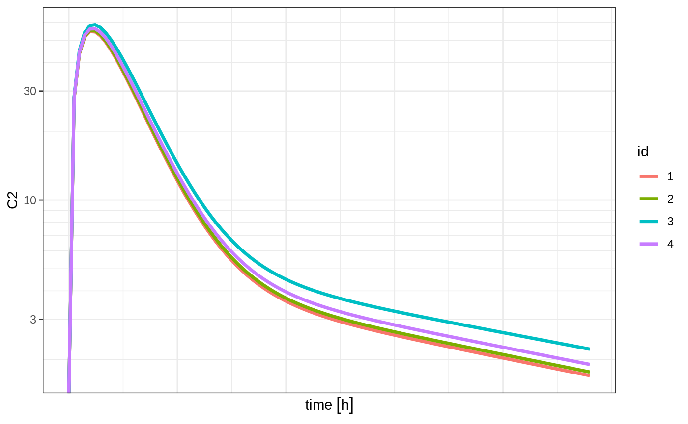
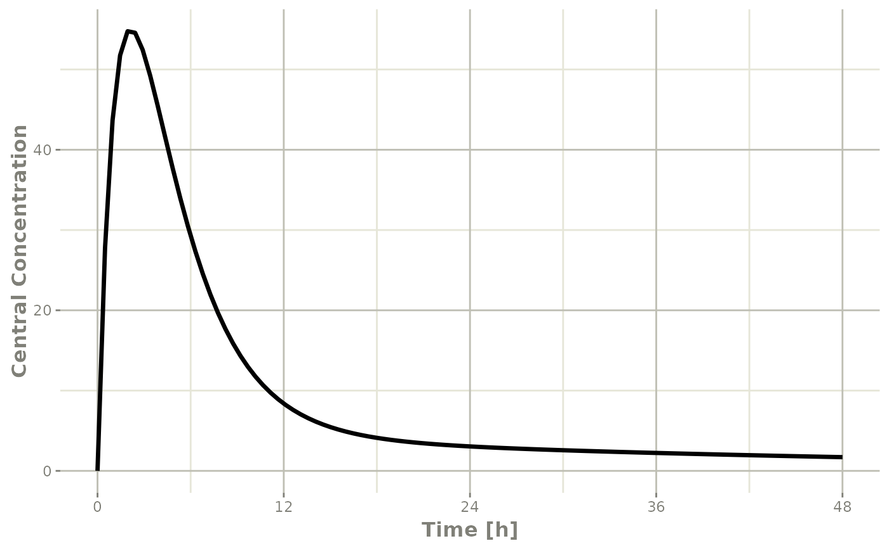
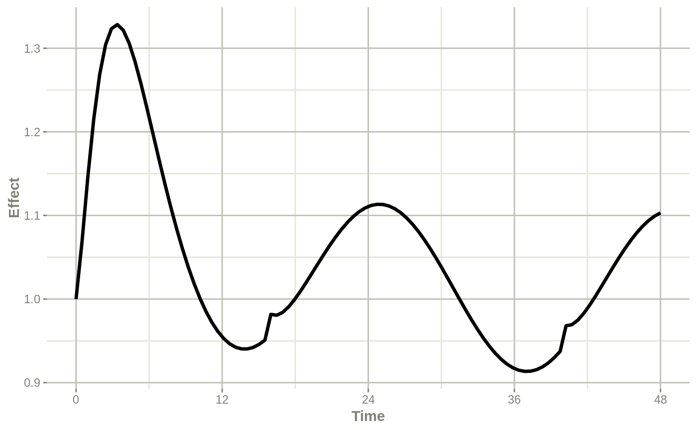
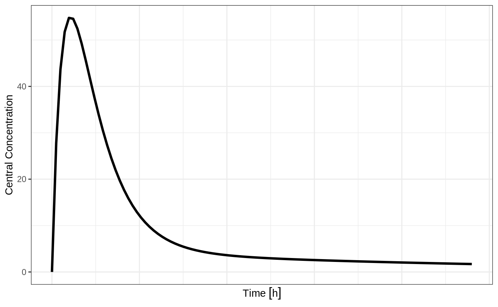
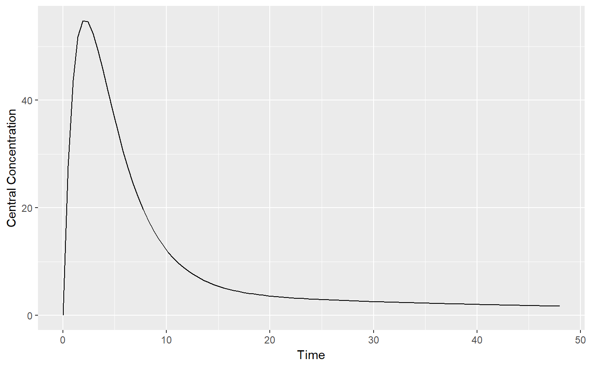
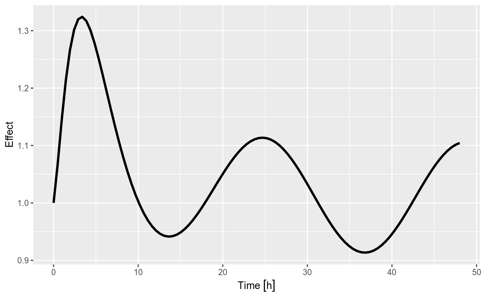
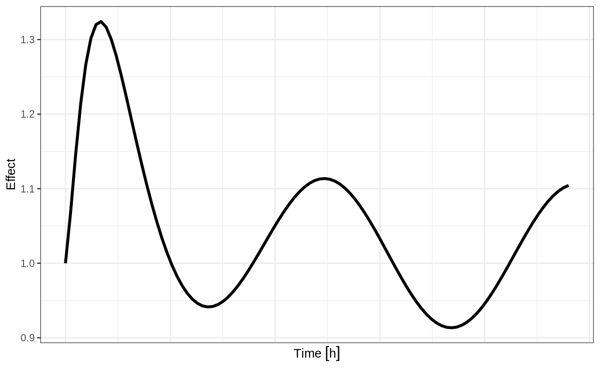

RxODE-covariates.RmdIf there is an individual covariate you wish to solve for you may specify it by the iCov dataset:
## udunits system database from /usr/share/udunitslibrary(xgxr)
mod3 <- RxODE({
KA=2.94E-01;
## Clearance with individuals
CL=1.86E+01 * (WT / 70) ^ 0.75;
V2=4.02E+01;
Q=1.05E+01;
V3=2.97E+02;
Kin=1;
Kout=1;
EC50=200;
## The linCmt() picks up the variables from above
C2 = linCmt();
Tz= 8
amp=0.1
eff(0) = 1 ## This specifies that the effect compartment starts at 1.
d/dt(eff) = Kin - Kout*(1-C2/(EC50+C2))*eff;
})
ev <- et(amount.units="mg", time.units="hours") %>%
et(amt=10000, cmt=2) %>%
et(0,48,length.out=100) %>%
et(id=1:4);
set.seed(10)
## Now use iCov to simulate a 4-id sample
r1 <- solve(mod3, ev,
# Create individual covariate data-frame
iCov=data.frame(id=1:4, WT=rnorm(4, 70, 10)),
# in this case it would be useful to keep the WT in the output dataset
keep="WT")
print(r1)## ▂▂▂▂▂▂▂▂▂▂▂▂▂▂▂▂▂▂▂▂▂▂▂▂▂▂▂▂▂▂ Solved RxODE object ▂▂▂▂▂▂▂▂▂▂▂▂▂▂▂▂▂▂▂▂▂▂▂▂▂▂▂▂▂
## ── Initial Conditions ($inits): ────────────────────────────────────────────────
## eff
## 1
## ── First part of data (object): ────────────────────────────────────────────────
## # A tibble: 400 x 6
## id time CL C2 eff WT
## <fct> [h] <dbl> <dbl> <dbl> <dbl>
## 1 1 0.0000000 18.6 0 1 70.2
## 2 1 0.4848485 18.6 27.8 1.03 70.2
## 3 1 0.9696970 18.6 43.7 1.08 70.2
## 4 1 1.4545455 18.6 51.7 1.13 70.2
## 5 1 1.9393939 18.6 54.7 1.18 70.2
## 6 1 2.4242424 18.6 54.5 1.21 70.2
## # … with 394 more rows
## ▂▂▂▂▂▂▂▂▂▂▂▂▂▂▂▂▂▂▂▂▂▂▂▂▂▂▂▂▂▂▂▂▂▂▂▂▂▂▂▂▂▂▂▂▂▂▂▂▂▂▂▂▂▂▂▂▂▂▂▂▂▂▂▂▂▂▂▂▂▂▂▂▂▂▂▂▂▂▂▂plot(r1, C2) + xgx_scale_y_log10()## Warning: Transformation introduced infinite values in continuous y-axis
Covariates are easy to specify in RxODE, you can specify them as a variable. Time-varying covariates, like clock time in a circadian rhythm model, can also be used. Extending the indirect response model already discussed, we have:
library(RxODE)
library(units)
mod3 <- RxODE({
KA=2.94E-01;
CL=1.86E+01;
V2=4.02E+01;
Q=1.05E+01;
V3=2.97E+02;
Kin0=1;
Kout=1;
EC50=200;
## The linCmt() picks up the variables from above
C2 = linCmt();
Tz= 8
amp=0.1
eff(0) = 1 ## This specifies that the effect compartment starts at 1.
## Kin changes based on time of day (like cortosol)
Kin = Kin0 +amp *cos(2*pi*(ctime-Tz)/24)
d/dt(eff) = Kin - Kout*(1-C2/(EC50+C2))*eff;
})
ev <- eventTable(amount.units="mg", time.units="hours") %>%
add.dosing(dose=10000, nbr.doses=1, dosing.to=2) %>%
add.sampling(seq(0,48,length.out=100));
## Create data frame of 8 am dosing for the first dose This is done
## with base R but it can be done with dplyr or data.table
ev$ctime <- (ev$time+set_units(8,hr)) %% 24Now there is a covariate present in the event dataset, the system can be solved by combining the dataset and the model:
r1 <- solve(mod3, ev, covs_interpolation="linear")
print(r1)
#> ▂▂▂▂▂▂▂▂▂▂▂▂▂▂▂▂▂▂▂▂▂▂▂▂▂▂▂▂▂▂ Solved RxODE object ▂▂▂▂▂▂▂▂▂▂▂▂▂▂▂▂▂▂▂▂▂▂▂▂▂▂▂▂▂
#> ── Parameters ($params): ───────────────────────────────────────────────────────
#>
#> KA CL V2 Q V3 Kin0 Kout
#> 0.294000 18.600000 40.200000 10.500000 297.000000 1.000000 1.000000
#> EC50 Tz amp pi
#> 200.000000 8.000000 0.100000 3.141593
#> ── Initial Conditions ($inits): ────────────────────────────────────────────────
#> eff
#> 1
#> ── First part of data (object): ────────────────────────────────────────────────
#> # A tibble: 100 x 4
#> time C2 Kin eff
#> [h] <dbl> <dbl> <dbl>
#> 1 0.0000000 0 1.1 1
#> 2 0.4848485 27.8 1.10 1.07
#> 3 0.9696970 43.7 1.10 1.15
#> 4 1.4545455 51.8 1.09 1.22
#> 5 1.9393939 54.8 1.09 1.27
#> 6 2.4242424 54.6 1.08 1.30
#> # … with 94 more rows
#> ▂▂▂▂▂▂▂▂▂▂▂▂▂▂▂▂▂▂▂▂▂▂▂▂▂▂▂▂▂▂▂▂▂▂▂▂▂▂▂▂▂▂▂▂▂▂▂▂▂▂▂▂▂▂▂▂▂▂▂▂▂▂▂▂▂▂▂▂▂▂▂▂▂▂▂▂▂▂▂▂When solving ODE equations, the solver may sample times outside of the data. When this happens, this ODE solver can use linear interpolation between the covariate values. It is equivalent to R’s approxfun with method="linear".


Note that the linear approximation in this case leads to some kinks in the solved system at 24-hours where the covariate has a linear interpolation between near 24 and near 0. While linear seems reasonable, cases like clock time make other interpolation methods more attractive.
In RxODE the default covariate interpolation is be the last observation carried forward (locf), or constant approximation. This is equivalent to R’s approxfun with method="constant".
r1 <- solve(mod3, ev,covs_interpolation="constant")
print(r1)
#> ▂▂▂▂▂▂▂▂▂▂▂▂▂▂▂▂▂▂▂▂▂▂▂▂▂▂▂▂▂▂ Solved RxODE object ▂▂▂▂▂▂▂▂▂▂▂▂▂▂▂▂▂▂▂▂▂▂▂▂▂▂▂▂▂
#> ── Parameters ($params): ───────────────────────────────────────────────────────
#>
#> KA CL V2 Q V3 Kin0 Kout
#> 0.294000 18.600000 40.200000 10.500000 297.000000 1.000000 1.000000
#> EC50 Tz amp pi
#> 200.000000 8.000000 0.100000 3.141593
#> ── Initial Conditions ($inits): ────────────────────────────────────────────────
#> eff
#> 1
#> ── First part of data (object): ────────────────────────────────────────────────
#> # A tibble: 100 x 4
#> time C2 Kin eff
#> [h] <dbl> <dbl> <dbl>
#> 1 0.0000000 0 1.1 1
#> 2 0.4848485 27.8 1.10 1.07
#> 3 0.9696970 43.7 1.10 1.15
#> 4 1.4545455 51.8 1.09 1.22
#> 5 1.9393939 54.8 1.09 1.27
#> 6 2.4242424 54.6 1.08 1.31
#> # … with 94 more rows
#> ▂▂▂▂▂▂▂▂▂▂▂▂▂▂▂▂▂▂▂▂▂▂▂▂▂▂▂▂▂▂▂▂▂▂▂▂▂▂▂▂▂▂▂▂▂▂▂▂▂▂▂▂▂▂▂▂▂▂▂▂▂▂▂▂▂▂▂▂▂▂▂▂▂▂▂▂▂▂▂▂which gives the following plots:


In this case, the plots seem to be smoother.
You can also use NONMEM’s preferred interpolation style of next observation carried backward (NOCB):
r1 <- solve(mod3, ev,covs_interpolation="nocb")
print(r1)
#> ▂▂▂▂▂▂▂▂▂▂▂▂▂▂▂▂▂▂▂▂▂▂▂▂▂▂▂▂▂▂ Solved RxODE object ▂▂▂▂▂▂▂▂▂▂▂▂▂▂▂▂▂▂▂▂▂▂▂▂▂▂▂▂▂
#> ── Parameters ($params): ───────────────────────────────────────────────────────
#>
#> KA CL V2 Q V3 Kin0 Kout
#> 0.294000 18.600000 40.200000 10.500000 297.000000 1.000000 1.000000
#> EC50 Tz amp pi
#> 200.000000 8.000000 0.100000 3.141593
#> ── Initial Conditions ($inits): ────────────────────────────────────────────────
#> eff
#> 1
#> ── First part of data (object): ────────────────────────────────────────────────
#> # A tibble: 100 x 4
#> time C2 Kin eff
#> [h] <dbl> <dbl> <dbl>
#> 1 0.0000000 0 1.1 1
#> 2 0.4848485 27.8 1.10 1.07
#> 3 0.9696970 43.7 1.10 1.15
#> 4 1.4545455 51.8 1.09 1.21
#> 5 1.9393939 54.8 1.09 1.27
#> 6 2.4242424 54.6 1.08 1.30
#> # … with 94 more rows
#> ▂▂▂▂▂▂▂▂▂▂▂▂▂▂▂▂▂▂▂▂▂▂▂▂▂▂▂▂▂▂▂▂▂▂▂▂▂▂▂▂▂▂▂▂▂▂▂▂▂▂▂▂▂▂▂▂▂▂▂▂▂▂▂▂▂▂▂▂▂▂▂▂▂▂▂▂▂▂▂▂which gives the following plots:

